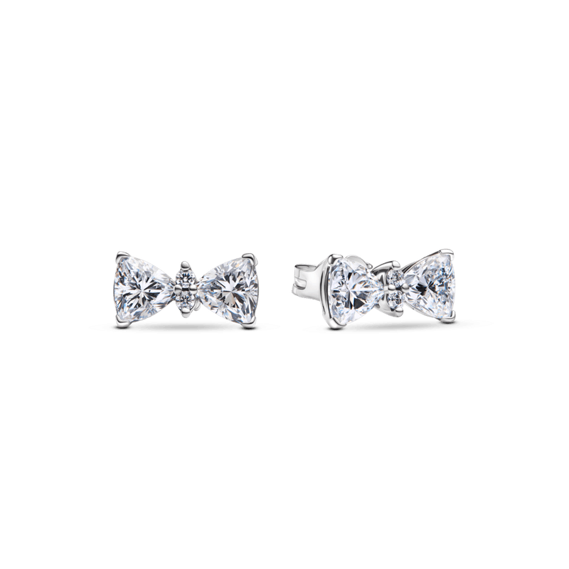

R$ 1.579,00
ou 10x de R$ 157,90
DESCRIÇÃO DO PRODUTO
O Brinco de Prata Pequeno Asas de Anjo é a escolha perfeita para quem busca um toque de delicadeza e sofisticação. Feito em prata esterlina, este par de brincos apresenta um design encantador em forma de asas, simbolizando proteção e liberdade. As asas são adornadas com zircônias cúbicas transparentes que refletem a luz de forma deslumbrante, adicionando um brilho sutil ao seu visual. Com um tamanho pequeno e discreto, esses brincos são ideais para o uso diário, mas também são versáteis o suficiente para complementar looks mais elaborados em ocasiões especiais. Eles são uma peça essencial para quem aprecia a elegância em cada detalhe.